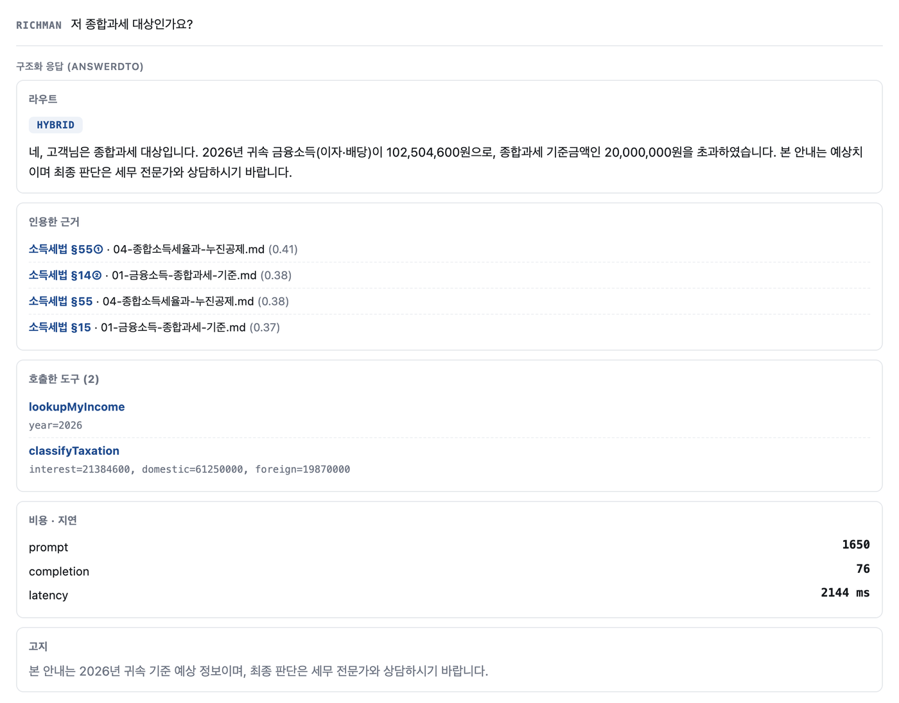
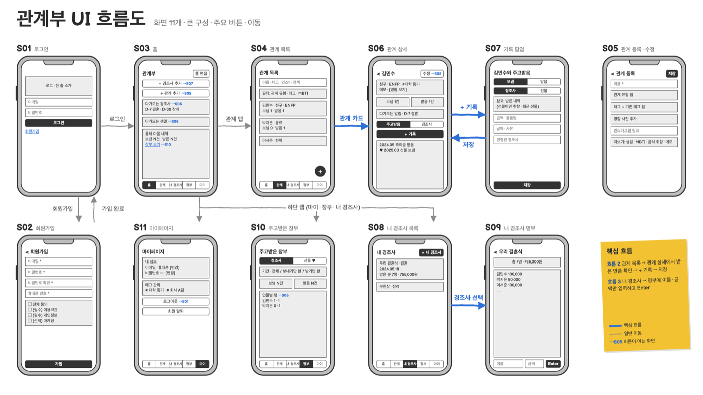
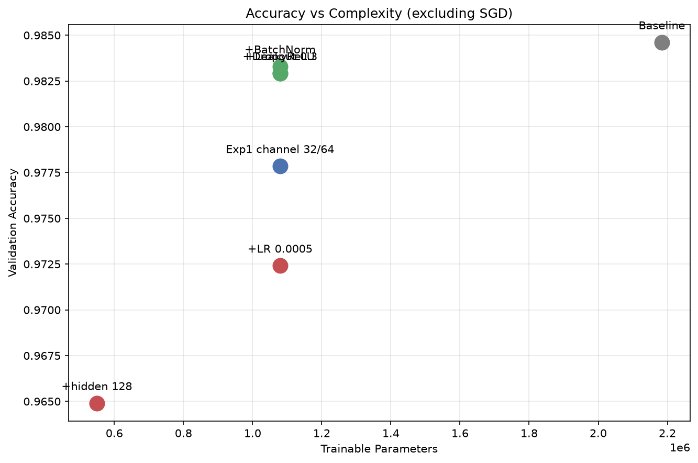

Profile
장인우
지킴컴퍼니의 5인 프로덕트팀에서 유일한 기획자로 일했습니다. 급여명세서 기획부터 도매몰 주문 연동, 처방전 스캔센터 운영까지 제가 맡은 실무 프로젝트 7건을 담았습니다.
- 서비스 기획 · IT 기획 · AX
- (주)지킴컴퍼니 서비스 기획·운영
- AI 서비스 개발 교육 과정 진행 중
- 영어 · 중국어 Business
확인된 근거
- 급여를 손으로 계산하던 기장팀이 새 기능을 쓰기까지급여 유형별로 세무 프로그램과 계산 결과를 맞춰 봤습니다. 배포 뒤에도 손으로 계산하는 담당자들에게 확인 방법을 설명했고, 이후 팀에서 실제 급여 계산에 쓰기 시작했습니다.
- 7인 팀으로 퀴즈 앱 출시, 동아리 PM MVP 선정PM으로서 AI가 공부 자료로 퀴즈를 만드는 기능을 PoC로 먼저 구현했습니다. 기획 문서를 작성하고 팀원별 작업을 관리하며 사용자 테스트를 준비했습니다. 중간·최종 발표도 맡았습니다. 이 과정에서 기여를 인정받았습니다.
- 블랙박스 영상 판별 대회, 팀 최종 320팀 중 24위팀원들이 키보드로 영상을 분류하면 결과가 바로 저장되는 라벨링 도구를 직접 만들었습니다. 원본 영상에 재촬영 효과를 입혀 만든 300쌍으로 모델을 학습시켰고, 재촬영 판별 점수를 0.375에서 0.751로 올렸습니다.
히스토리
프로젝트 전체경력
- 2024.10 – 2026.06
(주)지킴컴퍼니 · 프로덕트팀 서비스 기획·운영
약국 대상 세무·급여·처방전 보관 서비스. 5인 팀의 유일한 기획자로 화면·데이터·정책·예외를 정리하고 개발팀과 구현 결과를 대조했으며, 새로 연 처방전 스캔센터를 운영했습니다. 2024.10 인턴 입사, 2025.01 정규직 전환.
 급여명세서 서비스 기획계산 기준·정책 · 내부 사용
급여명세서 서비스 기획계산 기준·정책 · 내부 사용 의약품 도매몰 주문·박스 상태 연동기획·검증 · 운영 적용
의약품 도매몰 주문·박스 상태 연동기획·검증 · 운영 적용 약국 AI 세무 상담서비스 정책·화면 · 베타 단계
약국 AI 세무 상담서비스 정책·화면 · 베타 단계
- 2021.12 – 2024.06
제이머메이드 · 온라인 쇼핑몰 1인 창업
도매 최소 주문 수량과 라벨 교체 비용 때문에 상품을 팔기 전에 현금이 묶였습니다. 시즌 상품과 인기 상품은 미리 확보하고 나머지는 구매대행으로 전환했습니다. 이후 취급 상품이 늘고 네이버 스마트스토어 파워 등급에 올랐습니다.
사이드 프로젝트
- 2026.03 – 2026.07
DDD 사이드 프로젝트 · 퀴켓 PM · 동아리 PM MVP 선정
IT 직장인 사이드 프로젝트 동아리의 7인 팀(개발 4 · 디자인 2)에서 PM을 맡아 App Store·Google Play에 출시했습니다(팀 결과).
 퀴켓 | AI 퀴즈 학습 앱PM·기획 · 정식 앱 구현 개발팀
퀴켓 | AI 퀴즈 학습 앱PM·기획 · 정식 앱 구현 개발팀
교육 · 학력
- 2026.07 – 진행 중
AI 서비스 개발 교육 과정 (SK그룹 SKALA 4기)
개인 프로젝트 TaxDesk에서 금융소득 세무 상담 흐름을 설계하고 구현했습니다. 모의 테스트에서 다른 종합소득이 입력되지 않으면 세액을 계산하지 않고 금액을 되묻는 것을 확인했습니다.

TaxDesk | 금융소득 세무상담1인 설계 · AI 코딩 도구로 구현·검증
관계부 | 기능·화면·ERD·API 설계1인 설계·프론트엔드
교통표지판 인식 모델 경량화2인 과제 · 경량화 방향·실험
- 2016 – 2020
복단대학교 법학
자기주도 학습
-
The Web Developer 부트캠프 2025
HTML·CSS·JavaScript로 웹 화면을 구성하고, DOM 조작과 이벤트 처리 등 웹 개발 기초를 학습했습니다.
-
만렙 찍은 주니어 PM이 읽어야 할 프로덕트 관리 노하우
제품수명주기별 PM 역할과 서비스 이해·로드맵·문제 정의·우선순위 선정·평가 및 회고 과정을 학습했습니다.
-
기획자의 Figma 실무 워크숍: 두마리 토끼 잡기
Figma로 플로우차트·와이어프레임·스토리보드를 정리하고 프로토타입으로 화면 흐름을 표현하는 방법을 학습했습니다.
-
비전공자가 PM/서비스 기획자 되는 법
기능·요구사항 정의와 화면 설계, 개발자·디자이너와 협업하기 위한 서비스 기획 기초를 학습했습니다.
기술 | 어디에 썼는지
| 영역 | 기술 | 어디에 썼는지 |
|---|---|---|
| 기획 | PRD · IA · 유저플로우 · 기능명세 · Figma | 지킴컴퍼니 서비스 기획, 퀴켓 |
| AI | Spring AI (RAG · @Tool로 정의한 기능을 서버가 순서대로 호출), LLM API, LangChain 에이전트 도구 제한·사용자 승인(팀 실습) | TaxDesk, 퀴켓 미니 버전, Dev Notes |
| 백엔드 | Java · Spring Boot · JPA | TaxDesk, ClassTrack |
| 데이터 | SQL · PostgreSQL · Python | 마켓데스크, 라벨링 도구, 해커톤 데모 |
| 프론트엔드 | Vue 3 · React · TypeScript · Next.js | EDU:UP, 관계부 설계, 에이링크, 마켓데스크 |
| 협업 | Notion · Figma · Git/GitHub | 태스크·결정 기록, 화면 설계, 코드 관리 |
언어 · 자격
| 영어 | Business: OPIc IH(2026.06). 대학에서 영어 강의를 듣고 외국인 학생 4인 팀 과제의 진행과 발표를 맡았습니다. |
|---|---|
| 중국어 | Business: 중국에서 6년 유학(고교·학부)했습니다. 중국 도매업체와 중국어로 직접 협상했고, 수행통역 경험이 있습니다. |
| 자격 | ADsP(데이터분석 준전문가) · 재경관리사 · 전산세무 2급 · MOS Excel Expert |
함께 일하면
일할 때는 세심하게, 예상과 다른 결과 앞에서는 유연하게, 평소에는 무던하게.
별명은 ‘따뜻한 로봇’입니다. 논리적으로 생각하고 일하면서도, 함께하는 사람의 상황을 살핀다는 뜻입니다.
새로운 기회를 기다립니다
서비스 기획 · IT 기획 · AX 직무로 연락 주시면 빠르게 답장드리겠습니다.